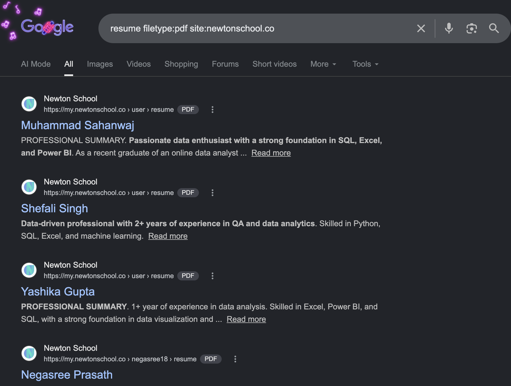

I would recommend against surveilling the personnel for finding their vulnerability. That ain't pentesting at all, and if you ain't a PI, it's outright creepy and criminal.
Gathering information that can be collected without direct contact with the organisation or their network. No direct contact here intends no detection.
One of the common tools for this are the Search Engines.
Search on Google for pdf files with resume keyword from newtonschool.co website.

Search on Google for resumes of employees of google.
Gathering information that can be only collected after direct contact with organisation or their network.
Prev >>